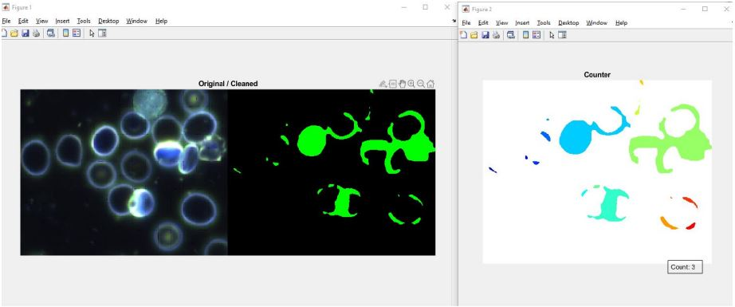
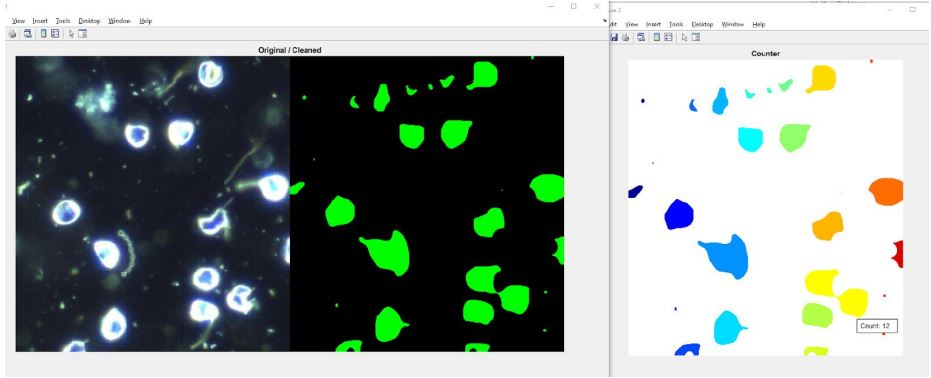

Este fue un proyecto realizado como parte de mi formación académica dentro de la Universidad, más especificamente en la materia de Procesamiento de Imágenes. Junto con otros compañeros, platicando y compartiendo ideas sobre que podíamos hacer con los conocimientos que adquirimos a lo largo de este curso, se nos ocurrió una idea sobre como ayudar en ámbitos sobre investigación biomédica.
Notamos que con lo aprendido sobre la materia podríamos tomar un gran número de imagenes tomadas con microscopios, limpiarlas y aparte contar todos los elementos distinguibles así como llevar la cuenta de cada uno de estos elementos. Todo esto era facilmente realizable através del programa que utilizamos en ese entonces, MatLab.
Después de indagar e investigar más en esta rama, la cual evidentemente no es nuestra principal ni la que buscamos profundizar, decidimos utilizar un grupo de imagenes de sangre en las cuales se podían visualizar al menos 2 tipos de celulas, Espiroquetas (bacterias) y Eritrocitos (glóbulos rojos). De esta manera comenzamos a trabajar con estas imagenes y a realizar las distintas transformaciones pertinentes para llegar al resultado deseado donde pudieramos distinguir cada entidad de otra y además llevar la contabilización total de las celulas visibles.
 
Estas imagenes fueron parte de los resultados finales que obtuvimos, como se pude ver se le asignó un color distinto a cada
elemento dsitinguido y así fue como pudimos finalmente contarlos y enlistarlos. Todo este desarrollo nos puede servir en el
área de investigación sanguínea ya que utilizando este método se pueden distinguir con facilidad los elementos importantes que
se encuentran presentes en una muestra de sangre para agilizar el analisis y posterior procedimiento científico desarrollado por
los expertos.
Aquí dejare el PDF del reporte por si requiere consultar los detalles técnicos de todo lo que se realizó: